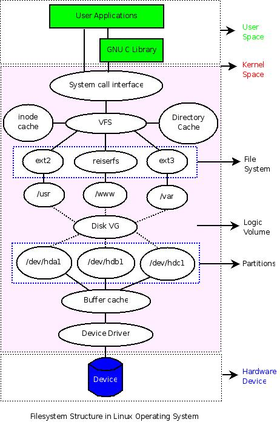

文件系统操作
- 前言
- 文件系统在 Linux 操作系统中的位置
- 硬件管理和设备驱动
- 理解、查看磁盘分区
- 分区和文件系统的关系
- 分区、逻辑卷和文件系统的关系
- 文件系统的可视化结构
- 如何制作一个文件系统
- 如何开发自己的文件系统
- 后记
前言
准备了很久，找了好多天资料，还不知道应该如何动笔写：因为担心拿捏不住，所以一方面继续查找资料，一方面思考如何来写。作为《Shell编程范例》的一部分，希望它能够很好地帮助 Shell 程序员理解如何用 Shell 命令来完成和 Linux 系统关系非常大的文件系统的各种操作，希望让 Shell 程序员中对文件系统"混沌"的状态从此消失，希望文件系统以一种更为清晰的样子呈现在眼前。
文件系统在 Linux 操作系统中的位置
如何来认识文件系统呢？从 Shell 程序员的角度来看，文件系统就是一个用来组织各种文件的方法。但是文件系统无法独立于硬件存储设备和操作系统而存在，因此还是有必要来弄清楚硬件存储设备、分区、操作系统、逻辑卷、文件系统等各种概念之间的联系，以便理解文件系统常规操作的一些“细节”。这个联系或许（也许会有一些问题）可以通过这样一种方式来呈现：

从图中可以清晰地看到各个“概念”之间的关系，它们以不同层次分布，覆盖硬件设备、系统内核空间、系统用户空间。在用户空间，用户可以不管内核如何操作具体硬件设备，仅仅使用程序员设计的各种界面就可以，而普通程序员也仅仅需要利用内核提供的各种接口（System Call）或者一些C库来和内核进行交互，而无须关心具体的实现细节。不过对于操作系统开发人员，他们需要在内核空间设计特定的数据结构来管理和组织底层的硬件设备。
下面从下到上的方式（即从底层硬件开始），用工具来分析和理解图中几个重要概念。（如果有兴趣，可以先看看下面的几则资料）
参考资料：
硬件管理和设备驱动
Linux 系统通过设备驱动管理硬件设备。如果添加了新的硬件设备，那么需要编写相应的硬件驱动来管理它。对于一些常见的硬件设备，系统已经自带了相应的驱动，编译内核时，选中它们，然后编译成内核的一部分或者以模块的方式编译。如果以模块的方式编译，那么可以在系统的 /lib/modules/$(uname -r)目录下找到对应的模块文件。
范例：查找设备所需的驱动文件
比如，可以这样找到相应的 scsi 驱动和 usb 驱动对应的模块文件：
更新系统中文件索引数据库(有点慢）
$ updatedb
查找 scsi 相关的驱动
$ locate scsi*.ko
查找 usb 相关的驱动
$ locate usb*.ko
这些驱动以 .ko 为后缀，在安装系统时默认编译为了模块。实际上可以把它们编译为内核的一部分，仅仅需要在编译内核时选择为[*]即可。但是，很多情况下会以模块的方式编译它们，这样可以减少内核的大小，并根据需要灵活地加载和卸载它们。下面简单地演示如何卸载模块、加载模块以及查看已加载模块的状态。
可通过 /proc 文件系统的 modules 文件检查内核中已加载的各个模块的状态，也可以通过 lsmod 命令直接查看它们。
$ cat /proc/modules
或者
$ lsmod
范例：查看已经加载的设备驱动
查看 scsi 和 usb 相关驱动，结果各列为模块名、模块大小、被其他模块的引用情况（引用次数、引用它们的模块）
$ lsmod | egrep "scsi|usb"
usbhid 29536 0
hid 28928 1 usbhid
usbcore 138632 4 usbhid,ehci_hcd,ohci_hcd
scsi_mod 147084 4 sg,sr_mod,sd_mod,libata
范例：卸载设备驱动
下面卸载 usbhid 模块看看（不要卸载scsi的驱动！因为你的系统可能就跑在上面，如果确实想玩玩，卸载前记得保存数据），通过 rmmod 命令就可以实现，先切换到 Root 用户：
$ sudo -s
# rmmod usbhid
再查看该模块的信息，已经看不到了吧
$ lsmod | grep ^usbhid
范例：挂载设备驱动
如果有个 usb 鼠标，那么移动一下，是不是发现动不了啦？因为设备驱动都没有了，设备自然就没法用罗。不过不要紧张，既然知道原因，那么重新加载驱动就可以，下面用 insmod 把 usbhid 模块重新加载上。
$ sudo -s
# insmod `locate usbhid.ko`
locate usbhid.ko 是为了找出 usbhid.ko 模块的路径，如果之前没有 updatedb，估计用它是找不到了，不过也可以直接到 /lib/modules 目录下用 find 把 usbhid.ko 文件找到。
# insmod $(find /lib/modules -name "*usbhid.ko*" | grep `uname -r`)
现在鼠标又可以用啦，不信再动一下鼠标 :-)
到这里，硬件设备和设备驱动之间关系应该是比较清楚了。如果没有，那么继续下面的内容。
范例：查看设备驱动对应的设备文件
Linux 设备驱动关联着相应的设备文件，而设备文件则和硬件设备一一对应。这些设备文件都统一存放在系统的 /dev/ 目录下。
例如，scsi 设备对应/dev/sda，/dev/sda1，/dev/sda2... 下面查看这些设备信息。
$ ls -l /dev/sda*
brw-rw---- 1 root disk 8, 0 2007-12-28 22:49 /dev/sda
brw-rw---- 1 root disk 8, 1 2007-12-28 22:50 /dev/sda1
brw-rw---- 1 root disk 8, 3 2007-12-28 22:49 /dev/sda3
brw-rw---- 1 root disk 8, 4 2007-12-28 22:49 /dev/sda4
brw-rw---- 1 root disk 8, 5 2007-12-28 22:50 /dev/sda5
brw-rw---- 1 root disk 8, 6 2007-12-28 22:50 /dev/sda6
brw-rw---- 1 root disk 8, 7 2007-12-28 22:50 /dev/sda7
brw-rw---- 1 root disk 8, 8 2007-12-28 22:50 /dev/sda8
可以看到第一列第一个字符都是 b，第五列都是数字 8 。 b 表示该文件是一个块设备文件，对应地，如果是 c 则表示字符设备（例如 `/dev/ttyS0)，关于块设备和字符设备的区别，可以看这里：
- 字符设备：字符设备就是能够像字节流一样访问的设备，字符终端和串口就属于字符设备。
- 块设备：块设备上可以容纳文件系统。与字符设备不同，在读写时，块设备每次只能传输一个或多个完整的块。在 Linux 操作系统中，应用程序可以像访问字符设备一样读写块设备（一次读取或写入任意的字节数据）。因此，块设备和字符设备的区别仅仅是在内核中对于数据的管理不同。
数字 8 则是该硬件设备在内核中对应的设备编号，可以在内核的 Documentation/devices.txt 和 /proc/devices 文件中找到设备号分配情况。但是为什么同一个设备会对应不同的设备文件（/dev/sda 后面为什么还有不同的数字，而且 ls 结果中的第 6 列和它们对应起来）。这实际上是为了区分不同设备的不同部分。对于硬盘，这样可以处理硬盘内部的不同分区。就内核而言，它仅仅需要通过第 5 列的设备号就可以找到对应的硬件设备，但是对于驱动模块来说，它还需要知道如何处理不同的分区，于是就多了一个辅设备号，即第 6 列对应的内容。这样一个设备就有了主设备号（第 5 列）和辅设备号（第 6 列），从而方便地实现对各种硬件设备的管理。
因为设备文件和硬件是对应的，这样可以直接从 /dev/sda （如果是 IDE 的硬盘，那么对应的设备就是 /dev/hda 啦）设备中读出硬盘的信息，例如：
范例：访问设备文件
用 dd 命令复制出硬盘的前 512 个字节，要 Root 用户
$ sudo dd if=/dev/sda of=mbr.bin bs=512 count=1
用 file 命令查看相应的信息
$ file mbr.bin
mbr.bin: x86 boot sector, LInux i386 boot LOader; partition 3: ID=0x82, starthead 254, startsector 19535040, 1959930 sectors; partition 4: ID=0x5, starthead 254, startsector 21494970, 56661255 sectors, code offset 0x48
也可以用 od 命令以 16 进制的形式读取并进行分析
$ od -x mbr.bin
bs 是块的大小（以字节 bytes 为单位），count 是块数
因为这些信息并不直观（而且下面会进一步深入分析），那么先来看看另外一个设备文件，将可以非常直观地演示设备文件和硬件的对应关系。还是以鼠标为例吧，下面来读取鼠标对应的设备文件的信息。
$ sudo -s
# cat /dev/input/mouse1 | od -x
你的鼠标驱动可能不太一样，所以设备文件可能是其他的，但是都会在 /dev/input 下。
移动鼠标看看，是不是发现有不同信息输出。基于这一原理，我们经常通过在一端读取设备文件 /dev/ttyS0 中的内容，而在另一端往设备文件 /dev/ttyS0 中写入内容来检查串口线是否被损坏。
到这里，对设备驱动、设备文件和硬件设备之间的关联应该是印象更深刻了。如果想深入了解设备驱动的工作原理和设备驱动的编写，那么看看下面列出的相关资料，开始设备驱动的编写历程吧。
参考资料：
- Compile linux kernel 2.6
- Linux 系统的硬件驱动程序编写原理
- Linux 下 USB设备的原理、配置、常见问题
- The Linux Kernel Module Programming Guide
- Linux 设备驱动开发
理解、查看磁盘分区
实际上内存、u 盘等都可以作为文件系统底层的“存储”设备，但是这里仅用硬盘作为实例来介绍磁盘和分区的关系。
目前 Linux 的分区依然采用第一台PC硬盘所使用的分区原理，下面逐步分析和演示这一分区原理。
磁盘分区基本原理
先来看看几个概念：
设备管理和分区
Linux 下，每一个存储设备对应一个系统的设备文件，对于硬盘等
IDE和SCSI设备，在系统的/dev目录下可以找到对应的包含字符hd和sd的设备文件。而根据硬盘连接的主板设备接口和数据线接口的不同，在hd或者sd字符后面可以添加一个从a到z的字符，例如hda，hdb，hdc和sda，sdb，sdc等，另外为了区别同一个硬件设备的不同分区，在后面还可以添加了一个数字，例如hda1，hda2，hda3和sda1，sda2，sda3，所以在/dev目录下，可以看到很多类似的设备文件。各分区的作用
在分区时常遇到主分区和逻辑分区的问题，这实际上是为了方便扩展分区，正如后面的逻辑卷的引入是为了更好地管理多个硬盘一样，引入主分区和逻辑分区可以方便地进行分区的管理。
Linux 系统中每一个硬盘设备最多由 4 个主分区（包括扩展分区）构成。
主分区的作用是计算机用来进行启动操作系统的，因此每一个操作系统的启动程序或者称作是引导程序，都应该存放在主分区上。 Linux 规定主分区（或者扩展分区）占用分区编号中的前 4 个。所以会看到主分区对应的设备文件为 /dev/hda1-4 或者 /dev/sda1-4，而不会是 hda5 或者 sda5 。
扩展分区则是为了扩展更多的逻辑分区的，在 Linux 下，逻辑分区占用了 hda5-16 或者 sda5-16 等 12 个编号。
- 分区类型
它规定了这个分区上的文件系统的类型。Linux支持诸如msdoc,vfat,ext2,ext3等诸多的文件系统类型，更多信息在下一小节进行进一步的介绍。
通过分析 MBR 来理解分区原理
下面通过分析硬盘的前 512 个字节（即 MBR）来分析和理解分区。
先来看看这张图：

它用来描述 MBR 的结构。 MBR 包括引导部分、分区表、以及结束标记 `(55AAH)，分别占用了 512 字节中 446 字节、 64 字节和 2 字节。这里仅仅关注分区表部分，即中间的 64 字节以及图中左边的部分。
由于我用的是 SCSI 的硬盘，下面从 /dev/sda 设备中把硬盘的前 512 个字节拷贝到文件 mbr.bin 中。
$ sudo -s
# dd if=/dev/sda of=mbr.bin bs=512 count=1
下面用 file，od，fdisk 等命令来分析这段 MBR 的数据，并对照上图以便加深理解。
$ file mbr.bin
mbr.bin: x86 boot sector, LInux i386 boot LOader; partition 3: ID=0x82, starthead 254, startsector 19535040, 1959930 sectors; partition 4: ID=0x5, starthead 254, startsector 21494970, 56661255 sectors, code offset 0x48
$ od -x mbr.bin | tail -6 #仅关注中间的64字节，所以截取了结果中后6行
0000660 0000 0000 0000 0000 a666 a666 0000 0180
0000700 0001 fe83 ffff 003f 0000 1481 012a 0000
0000720 0000 0000 0000 0000 0000 0000 0000 fe00
0000740 ffff fe82 ffff 14c0 012a e7fa 001d fe00
0000760 ffff fe05 ffff fcba 0147 9507 0360 aa55
$ sudo -s
# fdisk -l | grep ^/ #仅分析MBR相关的部分，不分析逻辑分区部分
/dev/sda1 * 1 1216 9767488+ 83 Linux
/dev/sda3 1217 1338 979965 82 Linux swap / Solaris
/dev/sda4 1339 4865 28330627+ 5 Extended
file 命令的结果显示，刚拷贝的 512 字节是启动扇区，用分号分开的几个部分分别是 bootloader，分区 3 和分区 4 。分区 3 的类型是 82，即 swap 分区（可以通过 fdisk 命令的 l 命令列出相关信息），它对应 fdisk 的结果中 /dev/sda3 所在行的第 5 列，分区 3 的扇区数是 1959930，转换成字节数是 1959930\*512 （目前，硬盘的默认扇区大小是 512 字节），而 swap 分区的默认块大小是 1024 字节，这样块数就是 :
$ echo 1959930*512/1024 | bc
979965
正好是 fdisk 结果中 /dev/sda3 所在行的第四列对应的块数，同样地，可以对照 fdisk 和 file 的结果分析分区 4 。
再来看看 od 命令以十六进制显示的结果，同样考虑分区 3，计算一下发现，分区 3 对应的 od 命令的结果为：
fe00 ffff fe82 ffff 14c0 012a e7fa 001d
首先是分区标记，00H，从上图中，看出它就不是引导分区（80H 标记的才是引导分区），而分区类型呢？为 82H，和 file 显示结果一致，现在再来关注一下分区大小，即 file 结果中的扇区数。
$ echo "ibase=10;obase=16;1959930" | bc
1DE7FA
刚好对应 e7fa 001d，同样地考虑引导分区的结果：
0180 0001 fe83 ffff 003f 0000 1481 012a
分区标记： 80H，正好反应了这个分区是引导分区，随后是引导分区所在的磁盘扇区情况，010100，即 1 面 0 道 1 扇区。其他内容可以对照分析。
考虑到时间关系，更多细节请参考下面的资料或者查看看系统的相关手册。
补充：安装系统时，可以用 fdisk，cfdisk 等命令进行分区。如果要想从某个分区启动，那么需要打上 80H 标记，例如可通过 cfdisk 把某个分区设置为 bootable 来实现。
参考资料：
分区和文件系统的关系
在没有引入逻辑卷之前，分区类型和文件系统类型几乎可以同等对待，设置分区类型的过程就是格式化分区，建立相应的文件系统类型的过程。
下面主要介绍如何建立分区和文件系统类型的联系，即如何格式化分区为指定的文件系统类型。
常见分区类型
先来看看 Linux 下文件系统的常见类型（如果要查看所有 Linux 支持的文件类型，可以用 fdisk 命令的 l 命令查看，或者通过 man fs 查看，也可通过 /proc/filesystems 查看到当前内核支持的文件系统类型）
ext2，ext3，ext4：这三个是 Linux 根文件系统通常采用的类型swap：这个是实现 Linux 虚拟内存时采用的一种文件系统，安装时一般需要建立一个专门的分区，并格式化为swap文件系统（如果想添加更多swap分区，可以参考本节的参考资料，熟悉dd，mkswap，swapon，swapoff等命令的用法）proc：这是一种比较特别的文件系统，作为内核和用户之间的一个接口存在，建立在内存中（可以通过cat命令查看/proc系统下的文件，甚至可以通过修改/proc/sys下的文件实时调整内核配置，当前前提是需要把proc文件系统挂载上：mount -t proc proc /proc
除了上述文件系统类型外，Linux 支持包括 vfat，iso，xfs，nfs 在内各种常见的文件系统类型，在 Linux 下，可以自由地查看和操作 Windows 等其他操作系统使用的文件系统。
那么如何建立磁盘和这些文件系统类型的关联呢？格式化。
格式化的过程实际上就是重新组织分区的过程，可通过 mkfs 命令来实现，当然也可以通过 fdisk 等命令来实现。这里仅介绍 mkfs，mkfs 可用来对一个已有的分区进行格式化，不能实现分区操作（如果要对一个磁盘进行分区和格式化，那么可以用 fdisk）。格式化后，相应分区上的数据就会通过某种特别的文件系统类型进行组织。
范例：格式化文件系统
例如：把 /dev/sda9 分区格式化为 ext3 的文件系统。
$ sudo -s
# mkfs -t ext3 /dev/sda9
如果要列出各个分区的文件系统类型，那么可以用 fdisk -l 命令。
更多信息请参考下列资料。
参考资料：
- Linux 下加载 swap 分区的步骤
- Linux 下 ISO 镜像文件的制作与刻录
- RAM 磁盘分区解释: [1], [2]
- 高级文件系统实现者指南
分区、逻辑卷和文件系统的关系
上一节直接把分区格式化为某种文件系统类型，但是考虑到扩展新的存储设备的需要，开发人员在文件系统和分区之间引入了逻辑卷。考虑到时间关系，这里不再详述，请参考资料：Linux 逻辑卷管理详解
文件系统的可视化结构
文件系统最终呈现出来的是一种可视化的结构，可用ls,find,tree等命令把它呈现出来。它就像一颗倒挂的“树”，在树的节点上还可以挂载新的“树”。
下面简单介绍文件系统的挂载。
一个文件系统可以通过一个设备挂载（mount）到某个目录下，这个目录被称为挂载点。有趣的是，在 Linux 下，一个目录本身还可以挂载到另外一个目录下，一个格式化了的文件也可以通过一个特殊的设备 /dev/loop 进行挂载（如 iso 文件）。另外，就文件系统而言，Linux 不仅支持本地文件系统，还支持远程文件系统（如 nfs）。
范例：挂载文件系统
下面简单介绍文件系统挂载的几个实例。
- 根文件系统的挂载
挂载需要 Root 权限，例如，挂载系统根文件系统 /dev/sda1 到 /mnt
$ sudo -s
# mount -t ext3 /dev/sda1 /mnt/
查看 /dev/sda1 的挂载情况，可以看到，一个设备可以多次挂载
$ mount | grep sda1
/dev/sda1 on / type ext3 (rw,errors=remount-ro)
/dev/sda1 on /mnt type ext3 (rw)
对于一个已经挂载的文件系统，为支持不同属性可以重新挂载
$ mount -n -o remount, rw /
- 挂载一个新增设备
如果内核已经支持 USB 接口，那么插入 u 盘时，可以通过 dmesg 命令查看对应的设备号，并挂载它。
查看 dmesg 结果中的最后几行内容，找到类似 /dev/sdN 的信息，找出 u 盘对应的设备号
$ dmesg
这里假设 u 盘是 vfat 格式，以便在一些打印店里的 Windows 上也可使用
# mount -t vfat /dev/sdN /path/to/mountpoint_directory
- 挂载一个 iso 文件或者是光盘
对于一些iso文件或者是 iso 格式的光盘，同样可以通过 mount 命令挂载。
对于 iso 文件：
# mount -t iso9660 /path/to/isofile /path/to/mountpoint_directory
对于光盘：
# mount -t iso9660 /dev/cdrom /path/to/mountpoint_directory
- 挂载一个远程文件系统
# mount -t nfs remote_ip:/path/to/share_directory /path/to/local_directory
- 挂载一个 proc 文件系统
# mount -t proc proc /proc
proc 文件系统组织在内存中，但是可以把它挂载到某个目录下。通常把它挂载在 /proc 目录下，以便一些系统管理和配置工具使用它。例如 top 命令用它分析内存的使用情况（读取 /proc/meminfo 和 /proc/stat 等文件中的内容）； lsmod 命令通过它获取内核模块的状态（读取 /proc/modules）； netstat 命令通过它获取网络的状态（读取 /proc/net/dev 等文件）。当然，也可以编写相关工具。除此之外，通过调整 /proc/sys 目录下的文件，可以动态地调整系统配置，比如往 /proc/sys/net/ipv4/ip_forward 文件中写入数字 1 就可以让内核支持数据包转发。（更多信息请参考 proc 的帮助，man
proc）
- 挂载一个目录
$ mount --bind /path/to/needtomount_directory /path/to/mountpoint_directory
这个非常有意思，比如可以把某个目录挂载到 ftp 服务的根目录下，而无须把内容复制过去，就可以把相应目录中的资源提供给别人共享。
范例：卸载某个分区
以上都只提到了挂载，那怎么卸载呢？用 umount 命令跟上挂载的源地址或者挂载点（设备，文件，远程目录等）就可以。例如：
$ umount /path/to/mountpoint_directory
或者
$ umount /path/to/mount_source
如果想管理大量的或者经常性的挂载服务，那么每次手动挂载是很糟糕的事情。这时就可利用 mount 的配置文件 /etc/fstab，把 mount 对应的参数写到 /etc/fstab 文件对应的列中即可实现批量挂载（ mount -a ）和卸载（ umount -a ）。 /etc/fstab 中各列分别为文件系统、挂载点、类型、相关选项。更多信息可参考 fstab 的帮助（ man fstab ）。
参考资料：
如何制作一个文件系统
Linux 文件系统下有一些最基本的目录，不同的目录下存放着不同作用的各类文件。最基本的目录有 /etc，/lib，/dev，/bin 等，它们分别存放着系统配置文件，库文件，设备文件和可执行程序。这些目录一般情况下是必须的，在做嵌入式开发时，需要手动或者是用 busybox 等工具来创建这样一个基本的文件系统。这里仅制作一个非常简单的文件系统，并对该文件系统进行各种常规操作，以便加深对文件系统的理解。
范例：用 dd 创建一个固定大小的文件
还记得 dd 命令么？就用它来产生一个固定大小的文件，这个为 1M(1024\*1024 bytes) 的文件
$ dd if=/dev/zero of=minifs bs=1024 count=1024
查看文件类型，这里的 minifs 是一个充满 \\0 的文件，没有任何特定的数据结构
$ file minifs
minifs: data
说明： /dev/zero 是一个非常特殊的设备，如果读取它，可以获取任意多个 \\0 。
接着把该文件格式化为某个指定文件类型的文件系统。（是不是觉得不可思议，文件也可以格式化？是的，不光是设备可以，文件也可以以某种文件系统类型进行组织，但是需要注意的是，某些文件系统（如 ext3）要求被格式化的目标最少有 64M 的空间）。
范例：用 mkfs 格式化文件
$ mkfs.ext2 minifs
查看此时的文件类型，这时文件 minifs 就以 ext2 文件系统的格式组织了
$ file minifs
minifs: Linux rev 1.0 ext2 filesystem data
范例：挂载刚创建的文件系统
因为该文件以文件系统的类型组织了，那么可以用 mount 命令挂载并使用它。
请切换到 root 用户挂载它，并通过 -o loop 选项把它关联到一个特殊设备 /dev/loop
$ sudo -s
# mount minifs /mnt/ -o loop
查看该文件系统信息，仅可以看到一个目录文件 lost+found
$ ls /mnt/
lost+found
范例：对文件系统进行读、写、删除等操作
在该文件系统下进行各种常规操作，包括读、写、删除等。(每次操作前先把 minifs 文件保存一份，以便比较，结合相关资料就可以深入地分析各种操作对文件系统的改变情况，从而深入理解文件系统作为一种组织数据的方式的实现原理等)
$ cp minifs minifs.bak
$ cd /mnt
$ touch hello
$ cd -
$ cp minifs minifs-touch.bak
$ od -x minifs.bak > orig.od
$ od -x minifs-touch.bak > touch.od
创建一个文件后，比较此时文件系统和之前文件系统的异同
$ diff orig.od touch.od
diff orig.od touch.od
61,63c61,64
< 0060020 000c 0202 2e2e 0000 000b 0000 03e8 020a
< 0060040 6f6c 7473 662b 756f 646e 0000 0000 0000
< 0060060 0000 0000 0000 0000 0000 0000 0000 0000
---
> 0060020 000c 0202 2e2e 0000 000b 0000 0014 020a
> 0060040 6f6c 7473 662b 756f 646e 0000 000c 0000
> 0060060 03d4 0105 6568 6c6c 006f 0000 0000 0000
> 0060100 0000 0000 0000 0000 0000 0000 0000 0000
通过比较发现：添加文件，文件系统的相应位置发生了明显的变化
$ echo "hello, world" > /mnt/hello
执行 sync 命令，确保缓存中的数据已经写入磁盘（还记得本节图 1 的 buffer cache 吧，这里就是把 cache 中的数据写到磁盘中）
$ sync
$ cp minifs minifs-echo.bak
$ od -x minifs-echo.bak > echo.od
写入文件内容后，比较文件系统和之前的异同
$ diff touch.od echo.od
查看文件系统中的字符串
$ strings minifs
lost+found
hello
hello, world
删除 hello 文件，查看文件系统变化
$ rm /mnt/hello
$ cp minifs minifs-rm.bak
$ od -x minifs-rm.bak > rm.od
$ diff echo.od rm.od
通过查看文件系统的字符串发现：删除文件时并没有覆盖文件内容，所以从理论上说内容此时还是可恢复的
$ strings minifs
lost+found
hello
hello, world
上面仅仅演示了一些分析文件系统的常用工具，并分析了几个常规的操作，如果想非常深入地理解文件系统的实现原理，请熟悉使用上述工具并阅读相关资料。
参考资料：
- Build a mini filesystem in linux from scratch
- Build a mini filesystem in linux with BusyBox
- ext2 文件系统
如何开发自己的文件系统
随着 fuse 的出现，在用户空间开发文件系统成为可能，如果想开发自己的文件系统，那么推荐阅读：使用 fuse 开发自己的文件系统。
后记
- 2007 年 12 月 22 日，收集了很多资料，写了整体的框架
- 2007 年 12 月 28 日下午，完成初稿，考虑到时间关系，很多细节也没有进一步分析，另外有些部分可能存在理解上的问题，欢迎批评指正
- 2007 年 12 月 28 日晚，修改部分资料，并正式公开该篇文档
- 29 号，添加设备驱动和硬件设备一小节